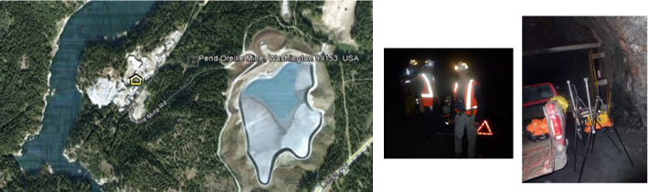
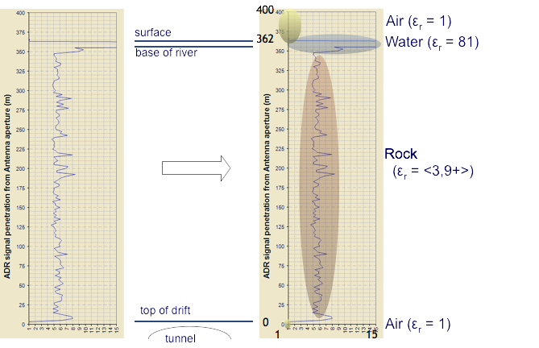

Underground Mine, USA
with
Geotechnical Application
- Working with Teck Resources Limited to test Geotechnical Application of Adrok Scanner for:
- rock mass characterisation
- identification of water
- Survey located underground in Teck’s care-and-maintenance mine at Pend Oreille Mine, USA
- Adrok’s survey results were compared to depths measured by mine’s surveyors (as blind test)
- No HSE accidents
Relative Dielectric Permittivity (εr)
looking upwards from the u/g access to the MX zone, POM
Outcome of field trial
- Teck Resources Ltd invested $5million for 17.5% equity in Adrok
- Adrok have also secured a non-exclusive Multi-million dollar Services Agreement with Teck for Adrok to provide geophysical survey services on their global properties for 2012 and 2013 (with an option to exceed thereafter)